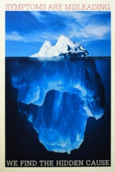

About Homeopathy
200+ Years of Worldwide Use
Homeopathy has been in worldwide use for over 200 years and is the second most widely used form of medicine for primary care in the world today.
Safe & Natural
Homeopathic remedies act by stimulating body's own defense mechanism and healing system. They do not have any chemical action, so they do not have the potential to cause any sustained damage.
Not Just a Placebo
It is proven to be effective in the treatment of babies and animals, who have no preconceptions. Remedies are gentle acting with no known side effects or interactions and are non-addictive.
Holistic Approach
A person is considered to be a whole entity, not a mere collection of body parts, so he or she doesn't have to visit ten different specialists for ten different body parts.
Long-Term Solution
Homeopathy is a long-term solution to maintaining a good standard of health, not a quick fix. It is much better to be cured of both the cause of the illness and its symptoms, rather than merely obtaining relief.
All Life Stages
Homeopathy is an excellent aid through pregnancy, birth, childhood illnesses, puberty, menopause and old age.
Learn More About Homeopathy
Select a topic to explore:
- About Homeopathy (informative brochure from the National Center for Homeopathy)
- A Brief History of Homeopathy
- The Principles of Homeopathy
- Top Ten Reasons to Use Homeopathy
- Clinical Studies - Overview of Positive Homeopathy Research
- The Safety of Homeopathy
- How Does Homeopathy Work?
A Brief History of Homeopathy

Homeopathy was developed in the late 18th century by Samuel Hahnemann, a German physician. Dissatisfied with the harsh medical practices of his time, Hahnemann began experimenting with different substances and discovered the principle of "like cures like."
He found that a substance that produces symptoms in a healthy person can cure similar symptoms in a sick person when given in very small doses. This became the foundation of homeopathic medicine.
Throughout the 19th century, homeopathy spread rapidly across Europe and to the United States, where it gained significant popularity. Many homeopathic hospitals and medical schools were established during this time.
Today, homeopathy is practiced worldwide and is particularly popular in Europe, India, and Latin America. It continues to be the subject of both clinical use and scientific research.
The Principles of Homeopathy
1. Like Cures Like (Law of Similars)
A substance that causes symptoms in a healthy person can be used to treat similar symptoms in a sick person. This is the fundamental principle of homeopathy.
2. Minimum Dose
Homeopathic remedies are prepared through a process of serial dilution and succussion (vigorous shaking). This process is believed to enhance the healing properties while minimizing any toxic effects.
3. Individualization
Each person is unique, and treatment must be tailored to the individual's specific symptoms, constitution, and life circumstances. Two people with the same diagnosis may receive different remedies.
4. Single Remedy
Classical homeopathy uses one remedy at a time, carefully selected to match the totality of the person's symptoms.
5. Holistic Treatment
Homeopathy treats the whole person - physical, mental, and emotional - rather than just isolated symptoms or disease labels.
Top Ten Reasons to Use Homeopathy
- Safe: No harmful side effects or drug interactions
- Natural: Made from natural substances
- Effective: Supported by clinical research and 200+ years of use
- Holistic: Treats the whole person, not just symptoms
- Individualized: Treatment tailored to your unique needs
- Non-addictive: No risk of dependency
- Complementary: Can be used alongside conventional medicine
- Affordable: Generally less expensive than conventional treatments
- All Ages: Safe for infants, children, adults, and elderly
- Preventive: Strengthens overall health and immunity
Clinical Research
Research has repeatedly shown that homeopathy does work and is not merely a placebo effect. Numerous clinical trials and studies have demonstrated the effectiveness of homeopathic treatment for various conditions.
For comprehensive information about homeopathy research, including:
- Systematic reviews and meta-analyses
- Clinical trials
- Basic research on mechanisms of action
- Safety studies
Please visit the Homeopathy Research Institute website.
The Safety of Homeopathy
Homeopathic remedies have an excellent safety profile. Because they are highly diluted, they do not have the chemical action of conventional drugs and therefore do not cause the side effects typically associated with pharmaceutical medications.
Key Safety Points:
- No known toxic effects
- No harmful drug interactions
- Non-addictive
- Safe during pregnancy and breastfeeding
- Safe for infants and children
- Safe for elderly patients
- Can be used alongside conventional medications
According to the European Council for Classical Homeopathy, homeopathy has one of the best safety records in medical practice.
How Does Homeopathy Work?
Homeopathy works by stimulating the body's own healing mechanisms. Rather than suppressing symptoms, homeopathic remedies encourage the body to heal itself from within.
The exact mechanism by which highly diluted remedies produce therapeutic effects is still being researched. Current theories include:
- Hormesis: Small doses of substances that cause symptoms can stimulate a healing response
- Information Medicine: The preparation process may imprint information about the original substance into the remedy
- Nanoparticles: Ultra-low doses of nanoparticles may remain in the remedy and have biological effects
- Energy Medicine: Remedies may work on an energetic or quantum level
Regardless of the mechanism, the effectiveness of homeopathy is demonstrated through clinical outcomes and the experiences of millions of patients worldwide over two centuries of use.